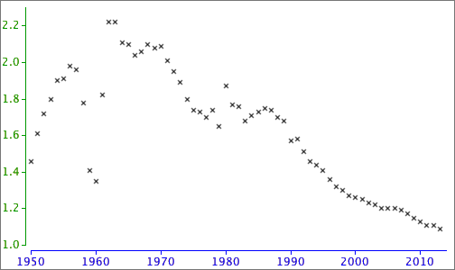
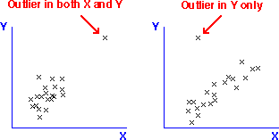
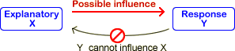
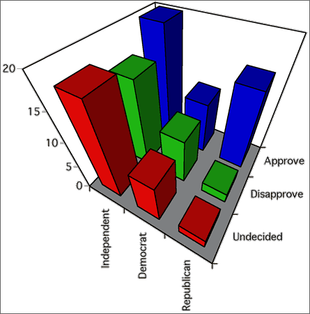

If you don't want to print now,
The data matrix
Many datasets contain several measurements from each individual (or plant, item or other unit). Each measurement type is called a variable.
A data set with more than one variable is called multivariate. One with two variables is called bivariate.
Scatterplots
A scatterplot shows each individual as a single cross against a vertical axis (for the variable, Y) and a horizontal axis (for the other variable, X).

By convention, the variable on the vertical axis is called Y and the variable on the horizontal axis is called X.
Scatterplots are needed to display relationships
The relationship between two variables cannot be determined from examination of the two variables in isolation. The two datasets shown in the scatterplots below have the same marginal distributions for X and Y, but the variables are related in very different ways.

Marginal distributions
Although they do not contain information about the relationship between the variables, a display of the marginal distributions can be usefully added to a scatterplot to enhance it, perhaps highlighting skewness in X and Y.

Time-ordering of univariate data
Some data sets are apparently univariate, but the measurements are made sequentially in time. A data set of this form is called a time series.
The time at which each measurement was made may be treated as an additional numerical variable, and the measurement can then be plotted against time. This type of scatterplot is often called a time series plot.

Strength of relationship
The most important information that a scatterplot shows is the strength of the relationship between the variables. The closer the points to a straight line or curve, the stronger the relationship.
If higher values of one variable tend to be associated with higher values of the other variable, the crosses on the scatterplot will be in a band with positive slope and the relationship is said to be positive. If high values of one variable tend to be associated with low values of the other variable, we say that there is a negative relationship.

The strength of the relationship between two variables is usually the most important information that we gain from a scatterplot but a scatterplot may display other features.
Outliers
Values that seem 'different' from the rest of the data are called outliers.
An outlier may be an extreme value of one or other variable, but an individual may be an outlier even though neither X nor Y is unusual on its own. One point is an outlier in each of the three data sets below.
 
The point is an outlier in the righthand data set because it lies well above the main group of points — its y-value is much higher than others with similar x-values.
Importance of outliers
Outliers are features of a data set that must be carefully checked. An outlier is often caused by a recording or transcription error, so...
First check that the values of the variables are correctly recorded.
Sometimes an outlier arises because an individual is fundamentally different from the others. Identifying what makes the individual different often gives considerable insight into the data.
The individuals should be further examined (perhaps collecting further information from them) to try to assess whether the outlier individual has distinct characteristics.
An outlier that is either extreme or that has other distinctive characteristics would often be deleted from the data set, but should be mentioned in a report about the data.
Clusters
Sometimes the cloud of crosses separates into two or more groups which are called clusters. As with outliers, clusters provide important information that should be further investigated.

The individuals should be examined (perhaps collecting further information from them) to assess whether the clusters correspond to individuals with distinct characteristics. For example, the clusters may correspond to males and females, or two different species of plant.
Interpreting outliers or clusters
We have described some information that may be read from a scatterplot. But how strong must the corrresponding patterns be before we should report them?
In both univariate and bivariate data sets, outliers or clusters must be distinct before we should conclude that they are real, in the absence of further external information confirming that the individuals are distinct.
Particularly in small data sets, outliers, clusters and other patterns may arise by chance, without being associated with any real features in the individuals.
Be careful not to overinterpret features in scatterplot unless they are well defined, especially if the sample size is small.
Causal relationships
In many bivariate data sets, the relationship between the two variables is not symmetric. From the nature of the variables and the way that the data were collected, it may be clear that one variable, X, can potentially influence the other, Y, but that the opposite is impossible.

In such data, the variable X is called the explanatory variable and Y is called the response.
Experiments
In an experiment, the person conducting the experiment controls the values of the explanatory variable. A well-designed experiment always ensures that the relationship between the explanatory variable and response is causal.
Observational studies
If the person collecting the data has no control over either of the variables, and simply records a pair of values from each individual, then the data are called observational. If one variable is an earlier measurement than the other, we may also be able to treat it as an explanatory variable and the later variable as the response.
Even if the relationship is not causal, we are sometimes interested in predicting the value of one variable from the other. The variable being predicted would then be treated as the response.
Bivariate data without an explanatory variable
In some bivariate categorical data sets, one variable can be treated as a response whose value depends on the other explanatory variable. The explanatory variable can then be used to split the individuals into groups.
In other bivariate data, the relationship between the variables is more symmetrical but we still want to discover whether particular values of one variable are associated with values of the other. A contingency table again summarises the data.
| Variable X | ||||
|---|---|---|---|---|
| Variable Y | X1 | X2 | X3 | |
| Y1 | 105 | 7 | 11 | |
| Y2 | 58 | 5 | 13 | |
| Y3 | 84 | 37 | 42 | |
| Y4 | 57 | 16 | 17 | |
Graphical display in a bar chart
If we do not want to classify the variables in a contingency table as a response and explanatory variable, the data can be displayed with a 3-dimensional bar chart.

Three-dimensional bar charts are 'interesting' but there are more informative ways to display the data.
Chartjunk and perspective displays
Beware of adding chartjunk and perspective viewpoints to the display — they just make it harder to understand the data.

Clustering bars in 2-dimensional bar chart
Rather than using a 3-dimensional bar chart, it is usually easier to assess the relationships between two variables from 2-dimensional bar charts. The bars can be clustered by either variable and it is often informative to examine both of these displays.

Marginal counts
Although our main interest is usually on the relationship between two categorical variables, it can also be of interest to examine the overall distribution of each variable separately. These are called the marginal distributions of the two variables and are determined by the row and column totals of the contingency table.
| Variable X | ||||||
|---|---|---|---|---|---|---|
| Variable Y | X1 | X2 | X3 | X4 | Total | |
| Y1 | 002 | 003 | 057 | 06 | 68 | |
| Y2 | 052 | 170 | 163 | 17 | 402 | |
| Y3 | 156 | 125 | 061 | 06 | 348 | |
| Y4 | 220 | 083 | 039 | 04 | 346 | |
| Total | 430 | 381 | 320 | 33 | ||
The row and column totals correspond to the heights of the stacks in stacked bar charts. For example, the above row totals are the heights of the stacks in the following diagram.

| and |
Spliting into groups
If the values of X are used to split the individuals into groups, the conditional distributions of Y given X are the distributions within each of these groups. They are found by dividing the cell counts by the totals for each such group. The columns of the table below show the conditional distributions for a contingency table, expressed as percentages.
| Variable X | |||||
|---|---|---|---|---|---|
| Variable Y | X1 | X2 | X3 | X4 | |
| Y1 | 000.5 | 000.8 | 017.8 | 018.2 | |
| Y2 | 012.1 | 044.6 | 050.9 | 051.5 | |
| Y3 | 036.3 | 032.8 | 019.1 | 018.2 | |
| Y4 | 051.2 | 021.8 | 012.2 | 012.1 | |
| Total | 100.0 | 100.0 | 100.0 | 100.0 | |
The conditional distributions of X given Y are similarly found by using Y to create the groups of individuals. They are found by dividing the cell counts by the totals in the other margin of the original contingency table.
| Variable X | ||||||
|---|---|---|---|---|---|---|
| Variable Y | X1 | X2 | X3 | X4 | Total | |
| Y1 | 02.9 | 04.4 | 83.8 | 8.8 | 100.0 | |
| Y2 | 12.9 | 42.3 | 40.5 | 4.2 | 100.0 | |
| Y3 | 44.8 | 35.9 | 17.5 | 1.7 | 100.0 | |
| Y4 | 63.6 | 24.0 | 11.3 | 1.2 | 100.0 | |
Both tables of conditional proportions (or percentages) are often informative.
Conditional distributions of X given Y and Y given X
The conditional proportions for X given Y can be quite different from the corresponding conditional proportions for Y given X and you must be careful to distinguish between them.
As an extreme example, under 5% of women are pregnant at any time, but 100% of pregnant people are women!
Conditional and marginal distributions
The distinction is between the marginal distribution for a variable and its conditional distributions is illustrated for the following contingency table that describes bruising of 96 apples in a packing plant.
| OK | Bruised | |
|---|---|---|
| Granny Smith | 40 | 8 |
| Fuji | 24 | 24 |
The diagram below shows the apples, arranged in rows by variety.

Observe that:
The apples can be rearranged as follows:

Now observe that: